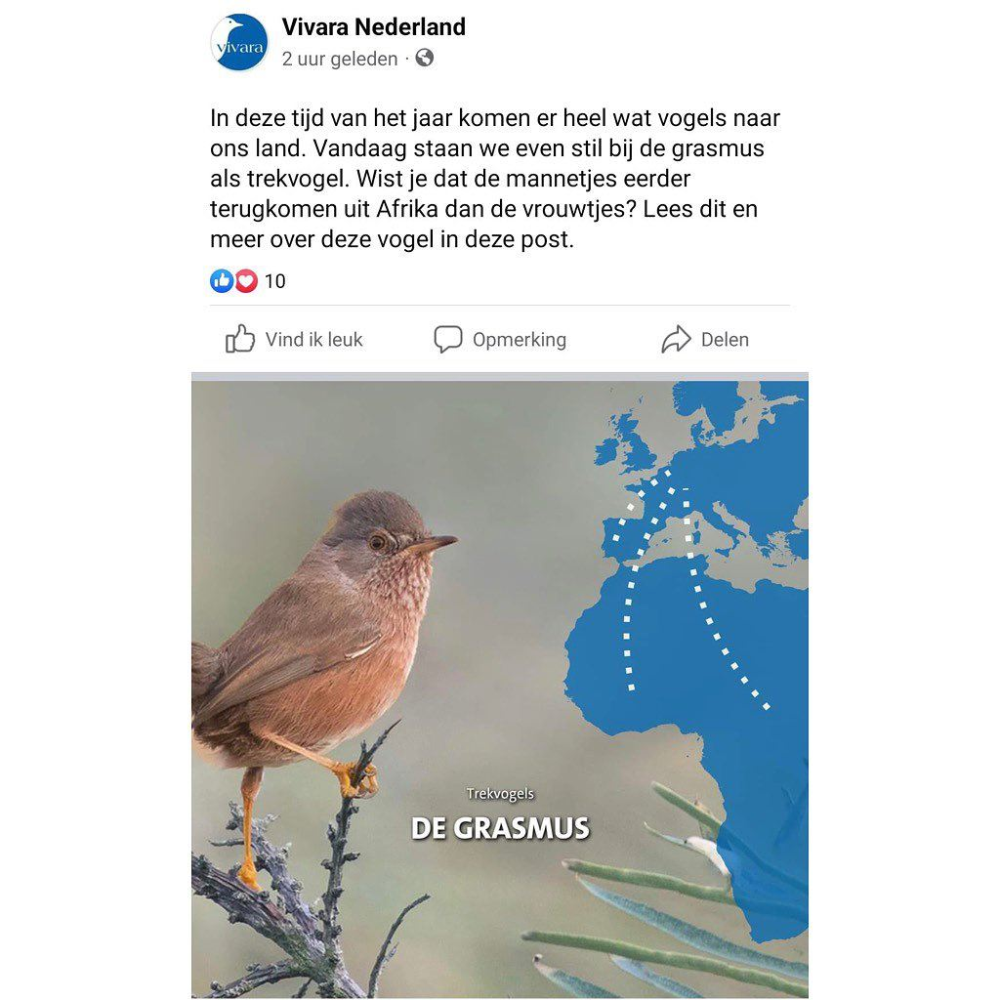

Provencaalse grasmus, geen grasmus
18 juli 2023 · Vivara
- Op de foto
- Provencaalse grasmus
- Het ging over
- Grasmus

@vivaranl is inmiddels vaste gast op ons account! We zoeken altijd naar goeie content maar erg fijn dat je altijd kan vertrouwen op Vivara.
Uiteraard is het wel een grasmus, maar niet de grasmus waar dit stuk waarschijnlijk over gaat. Dit is namelijk een Provençaalse grasmus, een zeldzame grasmus uit Zuid-Europa.